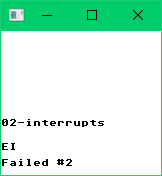
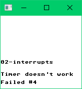

How to write a Game Boy emulator – Part 9: Interrupts
This post is part of a blog series about writing a Game Boy emulator.
I previously avoided talking about Blargg's CPU test ROM #2. I skipped it because it tests many non-trivial things. One of them is interrupts.
Blargg's CPU test ROM #2 (02-interrupts.gb) has this SHA-256 hash:
fb90b0d2b9501910c49709abda1d8e70f757dc12020ebf8409a7779bbfd12229When I run it, I get this output:

It fails because I haven't implemented interrupts.
Interrupts
There are 5 sorts of interrupts in the Game Boy:
| Interrupt | Bit in IE and IF | Interrupt handler address |
|---|---|---|
| V-Blank | 0 | 0x0040 |
| LCD Status | 1 | 0x0048 |
| Timer | 2 | 0x0050 |
| Serial | 3 | 0x0058 |
| Joypad | 4 | 0x0060 |
Interrupts disrupt the normal fetch-decode-execute cycle. After each such cycle, we need to check if there are interrupts to service. If it's the case, we have to call the appropriate interrupt handler.
We need to handle an interrupt if all these conditions are met:
- The Interrupt Master Enable (IME) is true. The IME is false at startup, and is affected only by these instructions: DI, EI, RETI (and also interrupt handling itself as described below).
- The corresponding bit in the Interrupt Enable (IE) is 1. IE is memory adress 0xFFFF.
- The corresponding bit in the Interrupt Flag (IF) is 1. IF is memory adress 0xFF0F. The higher 3 bits of IF are always 1.
- There are no interrupts of higher priority to service. The interrupts from higher priority to lower priority are: V-Blank, LCD Status, Timer, Serial, Joypad.
When we have determined we need to handle an interrupt, we need to:
- Disable interrupts (set IME to false).
- Clear the corresponding bit in IF (acknowledge the interrupt).
- Push PC on the stack.
- Jump to the corresponding interrupt handler.
The V-Blank interrupt
The V-Blank interrupt is the most important interrupt to implement. In fact, I'm going to skip over the other interrupts in this post.
The V-Blank corresponds to the period where the scanline is between 144 and 153. When the scanline goes from 143 to 144, the V-Blank interrupt is automatically requested in IF (bit 0 is set to 1).
The code
You should add something like this in your main loop:
// V-Blank.
curScanline = getScanline(&st)
IF := st.readMem_u8(0xFF0F) // IF: Interrupt Flag
if prevScanline < 144 && curScanline >= 144 {
// Request V-Blank interrupt.
IF = setBit(IF, 0, true)
st.writeMem_u8(0xFF0F, IF)
}
// Handle interrupts.
IE := st.readMem_u8(0xFFFF) // IE: Interrupt Enable
for i := uint(0); i <= 4; i++ {
if getBit(IF, i) && getBit(IE, i) {
if st.IME {
// Disable interrupts.
st.IME = false
// Acknowledge interrupt.
IF = setBit(IF, i, false)
st.writeMem_u8(0xFF0F, IF)
// Call interrupt handler.
PUSH.f.(func(*state, r_u16))(&st, PC)
interruptVector := [5]u16{0x0040, 0x0048, 0x0050, 0x0058, 0x0060}
PC.set(&st, interruptVector[i])
}
break
}
}If you implemented everything correctly, you should get this output:

It still fails, but for another reason: we haven't implemented the timer.